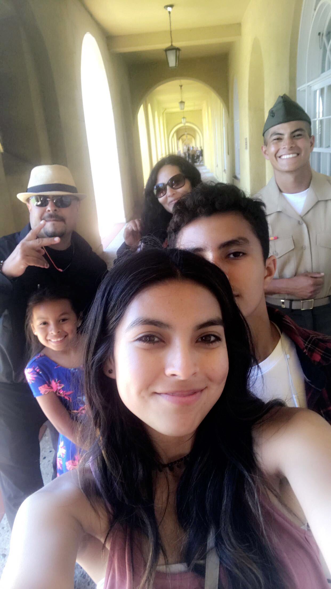
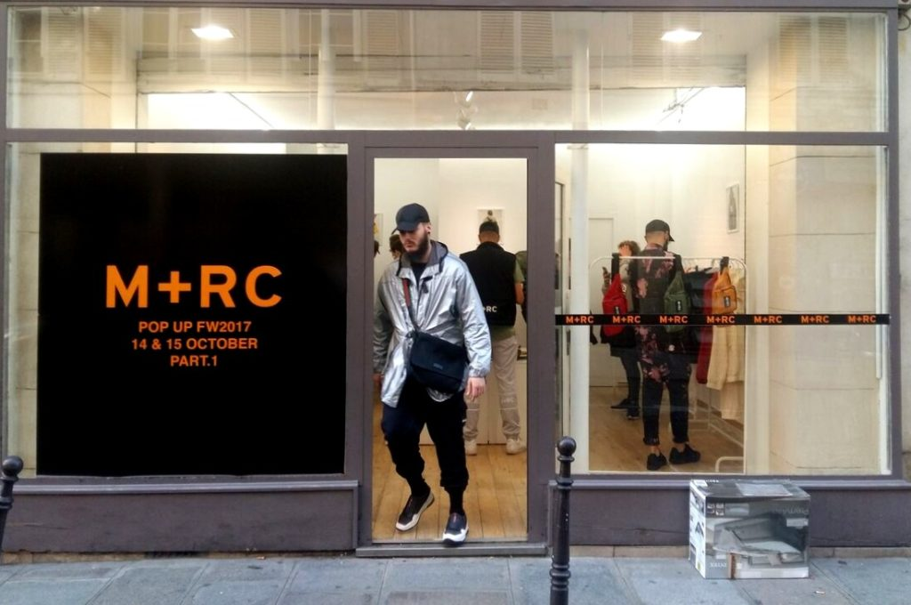

I live with both my parents, and I have a few siblings. I have an older brother, Gustavo, that’s a current US Marine. I also have two sisters, Nancy and Gaby Nancy is a current CSULB student, and my younger sister, Gaby. Gaby is in the 4th grade.

Hobbies that I enjoy
In my freetime, I love taking my dog for long walks around the neighborhood while i listen to music, it’s relaxing and fun. Sometimes when I’m bored, i also hop on FL Studio and make some beats for fun. And of course always listening to music.
Some pretty cool skills
Some cool skills I sustain, are making waffles (eggo), eggs, cereal, and toast.But if you hand me a loaf of bread i will make you a sandwhich
I am take a great deal of interest towards certain music and clothing. Ordinarily, I always have my headphones in, or i’m looking for clothes. The hardest part if finding clothes to wear that is suitable for school criteria or is school appropriate.
